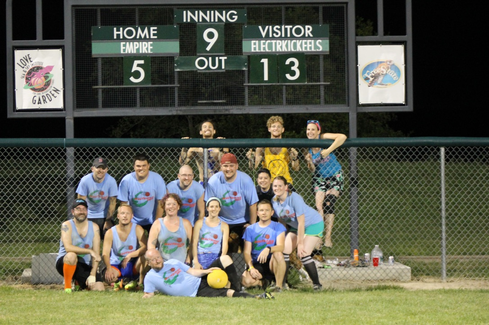

Lawrence City League
I first started playing kickball in 2016 with the Gym Class Rejects. We play in the Larwrence, KS Parks and Rec kickball league. In city league, there is a spring, summer, and fall season. We play on Friday nights from April-October. My team often finishes each season at the top of the league. Some faces change of the years, but we always have fun!
Gym Class Rejects - 2016
Gym Class Rejects - 2017

Gym Class Rejects - 2022
Kaw Valley Kickball League
The Kaw Valley Kickball League (KVKL), is a local non-profit kickball league. We raise money for local charities while also playing kickball every Sunday from mid-May through mid-August. KVKL has existed since 2002 and has raised almost $100K for local charities.
I also joined the Kaw Valley Kickball League in the summer of 2016. My first team was the Granstand Glass Kickers. I played four seasons with this team. In our fourth season, we had a new sponsor and became the JSC Electrkick Eels. During these four seasons, we usually won only one game each season, but we still loved to play as a team!
Grandstand Glass Kickers - 2016
Grandstand Glass Kickers - 2017
Grandstand Glass Kickers - 2018
JSC Electrkick Eels - 2019

In 2020, I joined a different team, Kansas Tree Care. However, the 2020 season was cancelled due to COVID-19.
The league came back strong in 2021 and I've been playing with Kansas Tree Care ever since. Kansas Tree Care has remained undefeated throughout the 2021 and 2022 seasons. In a league of 36 teams, we've taken home the championship trophy two seasons in a row! Fingers crossed we get a three-peat in 2023!
Kansas Tree Care - 2021
Kansas Tree Care - 2022
Kickball 365
To round out my kickball pastime, I joined a women's traveling team in 2021. We play in the Kickball 365 tournaments around the United States. We are called Lisa Frank Kickball (LFK for short). I've played five tournaments with LFK so far. We've won the championship in two of those tournaments and made it to the semi-finals or finals of the others.
New Orleans, LA - 2021
Tampa, FL - 2022
Boulder, CO - 2022
New Orleans, LA - 2022
Atlanta, GA - 2023